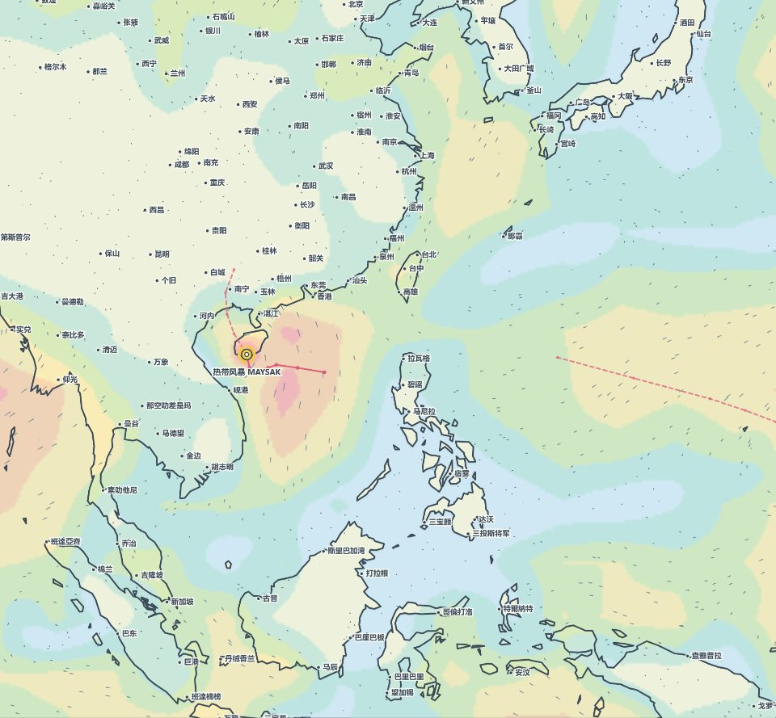
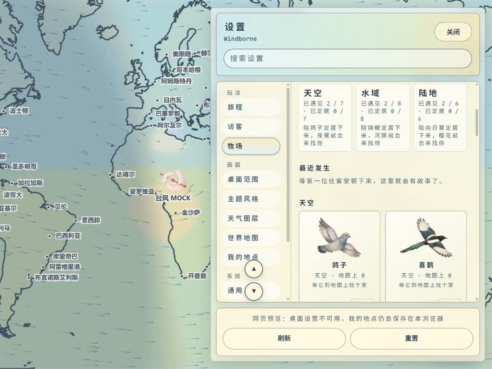

观察真实天气Watch real weather
风、雨、温度、昼夜与风暴共同改变桌面世界。 Wind, rain, temperature, daylight and storms reshape your desktop world.
真实天气驱动 · 桌面放置收集 REAL-WEATHER DESKTOP IDLE COLLECTION
Windborne 是一款常驻 Windows 桌面的低压力放置收集游戏。真实的风、雨、温度、时段和风暴， 会带来不同的天象访客与牧场反应；你只需要偶尔回来看看，发现、摆放、定居与下一目标都会被安静地记住。 Windborne is a gentle idle collection game that lives on your Windows desktop. Real wind, rain, temperature, time of day and storms bring different visitors and ranch reactions. Drop in when you like — discoveries, placements, settlements and next goals are quietly remembered.
不用守着屏幕，也不用赶倒计时。天气改变世界，你决定下一次想关注什么。 No need to watch the screen or chase a timer. Weather changes the world; you choose what to follow next.
风、雨、温度、昼夜与风暴共同改变桌面世界。 Wind, rain, temperature, daylight and storms reshape your desktop world.
合适的天气带来访客，也让牧场住客展现不同反应。 The right conditions bring visitors and new reactions from ranch residents.
真正看见一位访客，或把住客放进适合的栖息地。 Truly observe a visitor, or place a resident in a suitable habitat.
图鉴、定居、近期变化与下一目标，等你下次回来继续。 Your codex, settlements, recent changes and next goal wait for your return.
真实天气提供变化，低打扰设计把注意力留给你正在做的事。 Real weather creates variety; low-distraction design leaves your attention where it belongs.
真实风雨、温度、时段和风暴决定机会与反应，不只是背景颜色。 Real wind, rain, temperature, time and storms shape opportunities and reactions — not just colors.
访客要真正进入视野并被你看见，才会写进图鉴；预览不会偷跑进度。 A visitor enters your codex only after a real, visible encounter. Previews never inflate progress.
天空、水域与陆地各有住客和解锁方向，摆放与定居带来新的伙伴。 Sky, water and land each have residents and unlock paths. Placement and settlement bring new friends.
当前天气、收藏进度、近期变化与下一目标集中在一个入口里。 Current weather, collection progress, recent changes and your next goal share one calm home.
支持多显示器、每屏区域与画质设置，也可以随时收纳到角落。 Use multiple monitors, tune each screen's region and quality, or tuck the world into a corner.
没有连续签到、能量或错过损失；页面隐藏时会释放动画资源。 No streaks, energy or fear of missing out. Animation resources are released while hidden.
从日常云层到难得一见的天光，访客会在合适的真实天气里进入视野。图鉴保留发现时间、次数、 稀有度与条件线索，也会给出下一批值得等待的方向。 From everyday clouds to rare lights in the sky, visitors enter view only under fitting real weather. The codex keeps sightings, counts, rarity and condition clues, then points toward what to seek next.

Windborne 把风、雨、温度、昼夜和风暴整理成同一份天气状态。它同时改变地图氛围、访客机会与牧场住客的表现。 Windborne turns wind, rain, temperature, daylight and storms into one shared weather state. It shapes the map atmosphere, visitor opportunities and ranch reactions together.

从已经遇见的住客里挑一位，拖到地图上的天空、水域或陆地。一放手就会保存，真实天气还会改变它的动作与状态。 Choose a resident you have met and place it in the sky, water or land on your map. Placement saves immediately, while real weather changes its motion and state.
打开旅程，就能看到当前天气、访客与牧场进度、最近发生和下一目标。第一次进入时的五步说明可以跳过，也可以随时重看。 Open Journey to see current weather, visitor and ranch progress, recent events and your next goal. The five-step introduction is skippable and can be replayed whenever you want.
关掉面板后，桌面世界仍会安静运行；错过一次天气，不会受到惩罚。 Close the panel and the desktop world keeps running quietly. Missing a weather moment never punishes you.
从全球区域预设开始，也可以保存最多 8 个个人地点；多屏可分别选择区域、图层与画质。 Start with global presets or save up to eight personal places. Each monitor can use its own region, layer and quality.
把真实天气、天象访客和轻量牧场带回 Windows 桌面，慢慢积累属于你的旅程。 Bring real weather, sky-visitors and a gentle ranch to Windows, and build a journey of your own.
现已在 Steam 上线 AVAILABLE NOW ON STEAM Windborne · 风信来客 查看商店页面，了解系统需求与更多内容。 Visit the store page for system requirements and more details. 前往 Steam 商店View on Steam